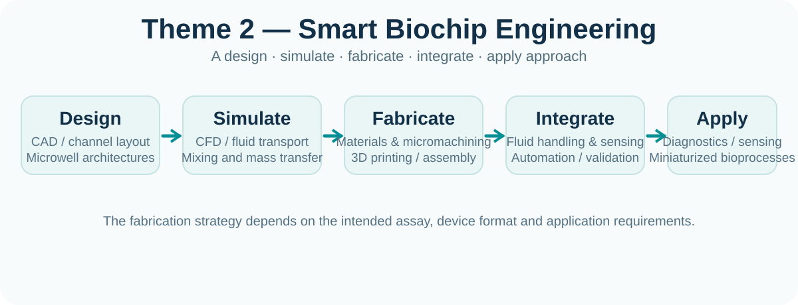

THEME 1
Intelligent Bioprocess Engineering
Development of integrated, continuous and autonomous bioprocesses with real-time analytics, chemometrics, machine learning and Digital Twins.
Explore further ↗A clear pathway from experimental engineering to intelligent, miniaturized bioengineering systems.
Development of integrated, continuous and autonomous bioprocesses with real-time analytics, chemometrics, machine learning and Digital Twins.
Explore further ↗
Design, simulation, fabrication and integration of microfluidic biochips for diagnostics, analytical biotechnology, sensing and microscale processing.
Explore further ↗